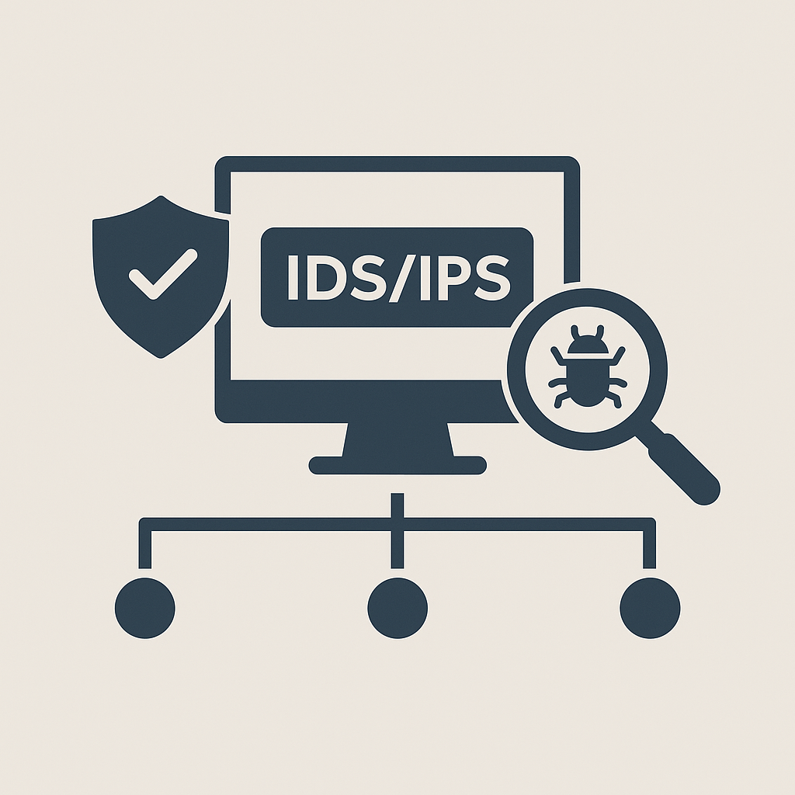
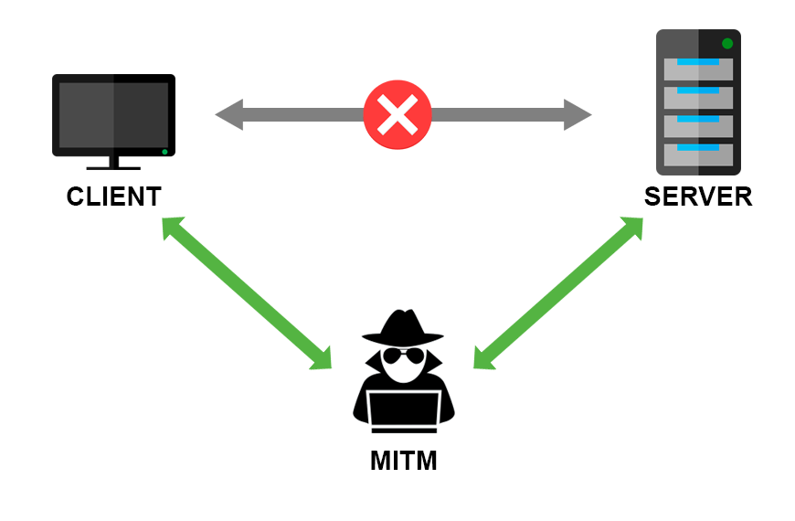
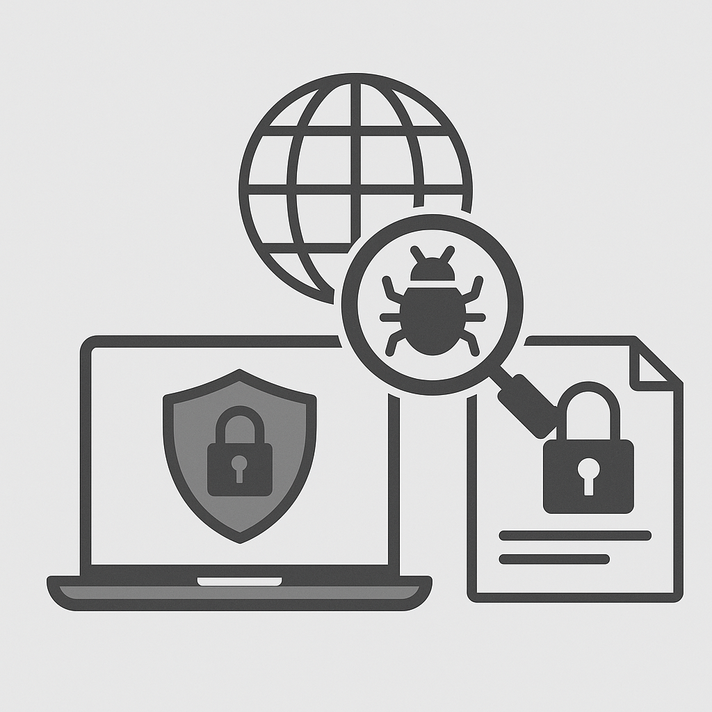

Dans cette section, vous trouverez une sélection de projets techniques mettant en avant mes compétences en cybersécurité, administration réseau et systèmes, ainsi qu'en gestion de bases de données. Chaque projet reflète mon engagement à concevoir des solutions sécurisées et innovantes adaptées aux besoins professionnels.
Trophée Ex Machina - Exercice de Gestion de Crise Cyber
- Participation active à la première édition du prestigieux exercice de gestion de crise cyber, simulant une crise dans un hôpital.
- Collaboration avec une équipe multidisciplinaire d'étudiants en cybersécurité, médecine et communication pour gérer une cyberattaque simulée.
- Mise en œuvre de procédures d'urgence et de continuité d'activité dans un contexte hospitalier.
- Simulation d'une cyberattaque sur un hôpital : réponse stratégique et communication de crise sous pression.
Compétences acquises :
- Gestion de crise
- Communication
- Travail d'équipe
- Prise de décision sous pression
Projet – Sécurisation d'un Réseau WiFi
- Mise en place d'une infrastructure WiFi sécurisée avec authentification RADIUS et gestion des accès via MySQL sous pfSense.
- Configuration et déploiement d'un serveur FreeRADIUS pour l'authentification centralisée des utilisateurs.
- Implémentation de politiques de sécurité réseau et de contrôle d'accès.
- Mise en œuvre de bonnes pratiques pour sécuriser les communications sans fil en environnement professionnel.
Compétences acquises :
- pfSense
- FreeRADIUS
- MySQL
- Authentification
- Sécurité réseau

Déploiement d’un Système de Détection d’Intrusion (IDS/IPS)
- Sélection et déploiement d’un IDS/IPS open source pour surveiller le trafic réseau.
- Configuration des signatures et réglages pour détecter les menaces et comportements suspects.
- Intégration avec un SIEM pour corréler les alertes.
- Analyse des logs et création de rapports pour la réponse aux incidents.
- Formation des administrateurs à l’interprétation des alertes et aux bonnes pratiques.
Compétences acquises :
- Suricata
- Détection d’intrusions
- Analyse de trafic réseau
- SIEM
- Sécurité réseau

Simulation d'une Attaque Man-in-the-Middle et ARP Spoofing
- Simulation d'attaque par empoisonnement ARP et interception du trafic réseau.
- Analyse des vulnérabilités des protocoles réseau et démonstration des risques associés.
- Proposition de mesures de protection et de détection contre ce type d'attaques.
- Utilisation d'outils comme Wireshark pour analyser le trafic intercepté.
Compétences acquises :
- Analyse de protocoles
- Tests d'intrusion
- Wireshark
- Éthique hacker

Analyse de Vulnérabilités Web et Sécurisation d'Applications
- Audit de sécurité complet d'applications web avec identification des vulnérabilités OWASP Top 10.
- Utilisation d'outils comme OWASP ZAP, Burp Suite et Nessus.
- Développement de correctifs et recommandations pour renforcer la sécurité des applications.
- Mise en place de bonnes pratiques de développement sécurisé.
Compétences acquises :
- OWASP Top 10
- Burp Suite
- Tests d'intrusion
- Sécurité applicative
- DevSecOps
Mise en place d'un SOC Virtuel avec Détection Avancée
- Conception et déploiement d'un SOC virtuel pour la surveillance des incidents.
- Intégration de solutions SIEM (Wazuh, ELK Stack).
- Règles de corrélation personnalisées et alertes automatisées.
- Tableaux de bord de surveillance pour une réponse rapide.
Compétences acquises :
- SIEM
- Wazuh
- ELK Stack
- Détection d'incidents
- Analyse de logs